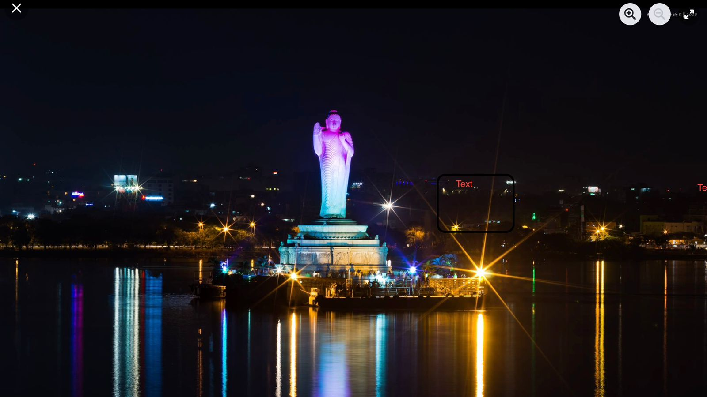
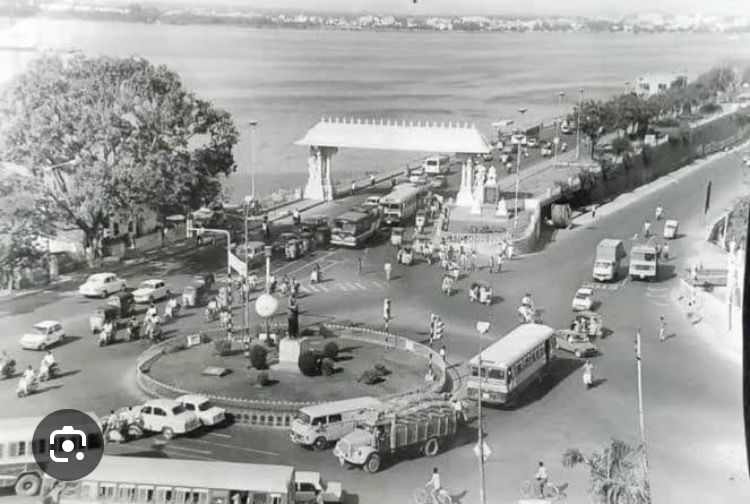

Tank bund
Tank Bund is an extremely well-known place in Hyderabad that connects the twin cities of Hyderabad and Secunderabad across Hussain Sagar Lake. You can see the lake and the boudha statue in the middle of the lake. There are 33 statues of Telugu legends - poets, rulers, and freedom fighters - along the road next to Tank Bund. People come here to relax, walk in the evening, and enjoy a tranquil view of the lake. At night, the place looks beautiful with all the colors of light reflected on the water. Tank Bund is definitely the right place to experience the peace and beauty of Hyderabad.
 